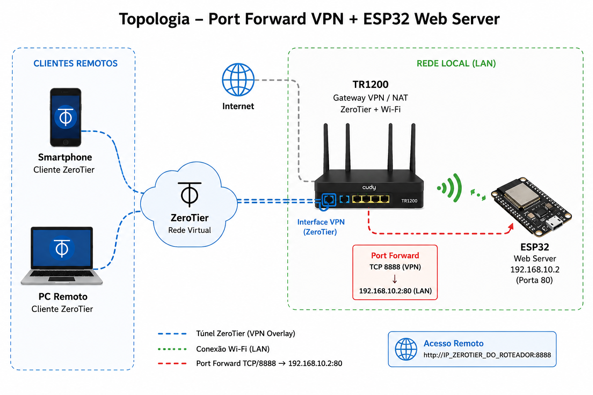

| Dispositivo | Função |
|---|---|
| TR1200 | Gateway VPN / NAT |
| ESP32 | Web Server embarcado |
| ZeroTier | VPN overlay |
| Smartphone | Cliente remoto |
| PC remoto | Cliente VPN |
O objetivo deste laboratório foi disponibilizar remotamente um web server hospedado em um ESP32, utilizando uma rede VPN overlay via ZeroTier executando diretamente no roteador TR1200.
Através de regras de port forwarding aplicadas na interface VPN do roteador, foi possível acessar o serviço HTTP do microcontrolador remotamente, sem necessidade de instalar ZeroTier diretamente no ESP32.
O cliente remoto conecta-se à rede virtual ZeroTier.
O roteador TR1200 participa da VPN e realiza:
Fluxo simplificado:
Cliente remoto
↓
Rede ZeroTier
↓
TR1200
↓
Port Forward
↓
ESP32 Web ServerExecutar o cliente ZeroTier diretamente no TR1200, permitindo:
Todo o processo foi realizado via interface LuCI/CudyOS.
Menu utilizado:
VPN → ZeroTierEtapas:
Redirecionar conexões recebidas pela interface VPN do roteador diretamente para o ESP32 na rede local.
Menu utilizado:
Network → Port ForwardsRegra criada:
| Campo | Valor |
|---|---|
| Nome | ESP32_HTTP |
| Protocolo | TCP |
| Interface | VPN |
| External Port | 8888 |
| Internal IP | 192.168.10.2 |
| Internal Port | 80 |
Conectado à rede ZeroTier:
http://IP_ZEROTIER_DO_ROTEADOR:8888Cliente remoto
↓
Interface ZeroTier do TR1200
↓
Port Forward TCP/80
↓
ESP32 192.168.10.2:80Recursos funcionando:
Este laboratório demonstrou como um roteador Linux/OpenWrt pode atuar como gateway VPN para dispositivos embarcados que não possuem cliente VPN próprio.
A utilização do ZeroTier diretamente no TR1200 permitiu integrar toda a rede local à VPN overlay, enquanto o port forwarding tornou possível publicar serviços específicos do ESP32 para acesso remoto controlado.
A arquitetura utilizada aproxima-se de cenários reais de edge computing, IoT e acesso remoto seguro para dispositivos embarcados.